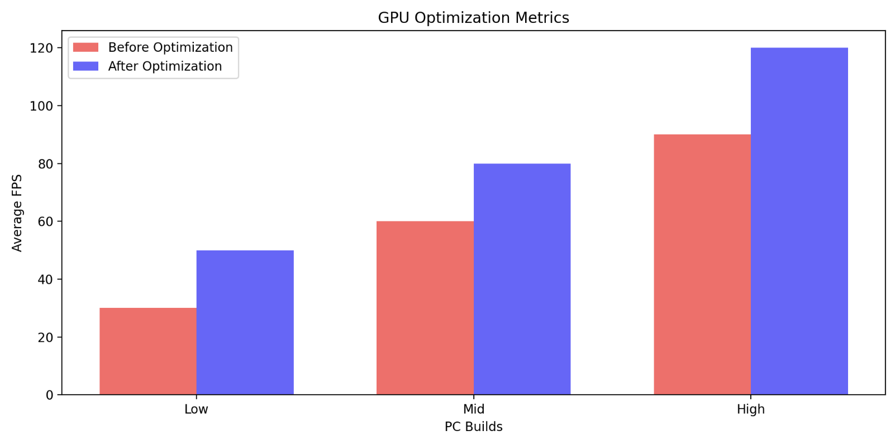
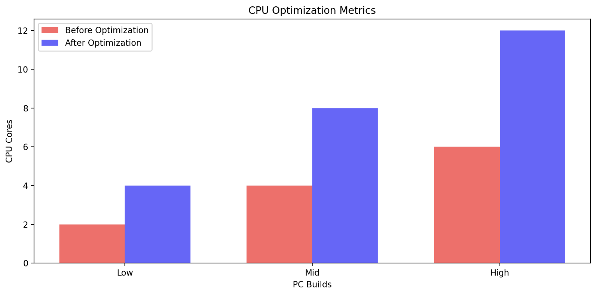
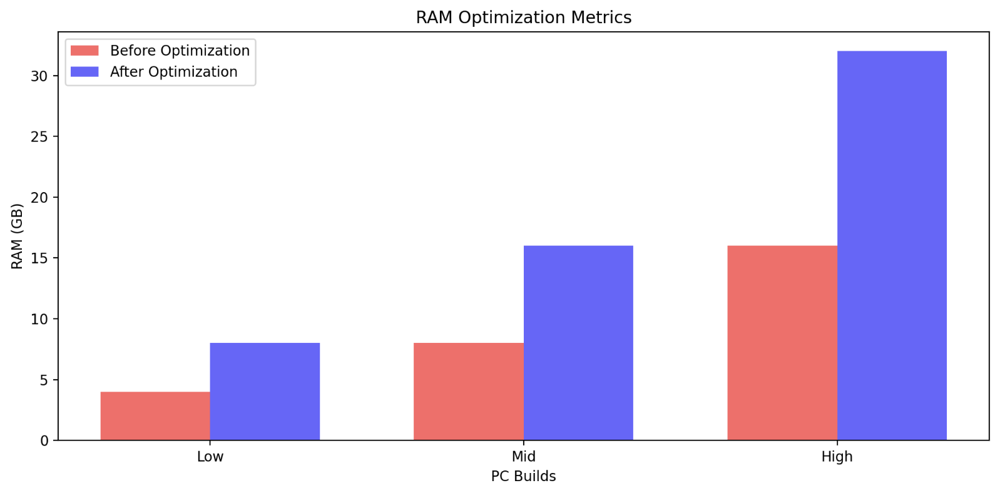

Real-World Results
In this section we will showcase real-world benchmarks from the optimized builds.
GPU Optimization - Cyberpunk 2077
I tested the optimization impact on GPU performance in Cyberpunk 2077, which is a demanding open-world game. In the graph below, you can see how the FPS performance improved after GPU optimization:
Before and After Optimization - GPU
As shown in the graph, the entry-level build saw a noticeable increase in FPS, with mid and high-end builds achieving even better improvements, making the gaming experience smoother and more enjoyable.
Real-World Benefit - GPU
For gamers, higher FPS means smoother, more responsive gameplay. In Cyberpunk 2077, this translates to better visuals and fewer stutters, giving you a more immersive experience without those annoying interruptions. By optimizing your GPU, even demanding games like Cyberpunk 2077 can run smoothly, no matter if you're on a lower-end rig.
CPU Optimization - HandBrake Encoding
Next, I analyzed the impact of CPU optimizations on video encoding tasks using HandBrake, a common CPU-heavy application. Below is the graph showing how the performance improved:
Before and After Optimization - CPU
Optimizing the CPU performance resulted in faster video encoding times across all three builds, with the high-end build seeing the most dramatic improvement in processing speed.
Real-World Benefit - CPU
For content creators, a faster CPU can seriously cut down the time spent rendering videos, compiling projects, or doing other heavy tasks. Optimizing your CPU can shave off as much as 30% from video processing times, letting you spend more time on the creative side and less time staring at progress bars.
RAM Optimization - Real-World Multitasking
RAM optimization plays a crucial role in multitasking, since it allows your system to handle more applications without slowing down. The graph below shows how optimized RAM impacts system responsiveness and overall performance:
Before and After Optimization - RAM
The results clearly show that optimized RAM improves system stability and responsiveness, especially in mid-range and high-end builds. Faster RAM allows for smoother performance in multitasking scenarios, such as video editing, browsing, and gaming.
Real-World Benefit - RAM
With optimized RAM, you’ll experience better multitasking efficiency, meaning you can run more applications simultaneously without the system slowing down. For example, with faster RAM, a high-end system can seamlessly handle video editing, web browsing, and gaming at the same time without significant performance loss. For gamers, faster RAM can improve loading times and overall system responsiveness in demanding titles.